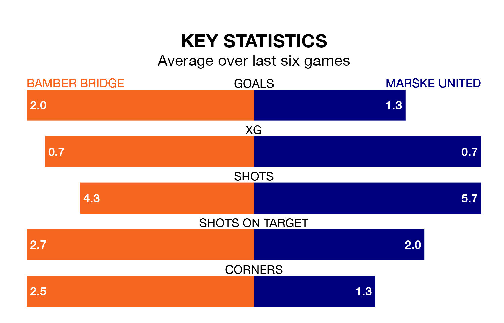

Bamber Bridge face Marske United on Saturday seeking to protect their long unbeaten run in Northern Premier League.
Bamber Bridge are unbeaten in five, with three wins and two draws, ahead of the 3pm kick-off.
They face a Marske team who have won three and lost two over the same number of games.
With 30 goals in 22 games so far this season, Marske are scoring at below the league average rate with 1.4 goals per game. And they are conceding more than average, letting in 53 goals at a rate of 2.4 per game.
Bamber Bridge, meanwhile, are average scorers, with 1.7 goals per game. They have conceded 1.6 goals per game.
United are 18th in the table after 22 games, of which they have won seven and lost 15, earning 21 points.
The home team are four places ahead of the visitors in 14th, with seven wins and 11 draws putting them on 32 points.
Bamber Bridge's last match was on Monday, a 2-2 draw against Workington.
Marske lost 2-0 against Morpeth Town last time out, on December 30.
Updated: 12:57, 02/01/24